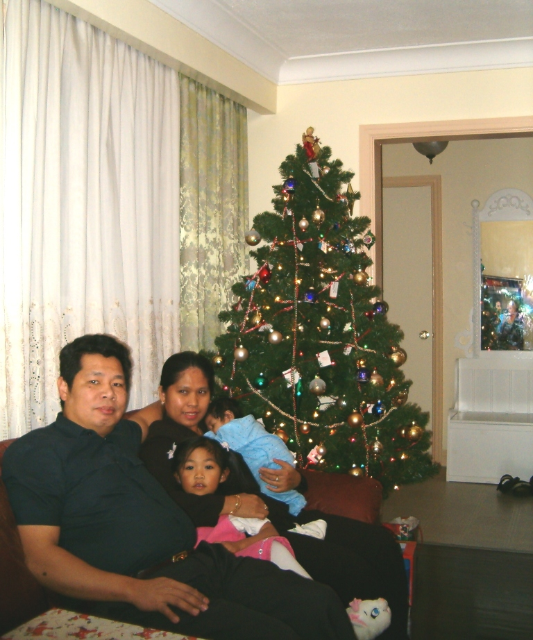
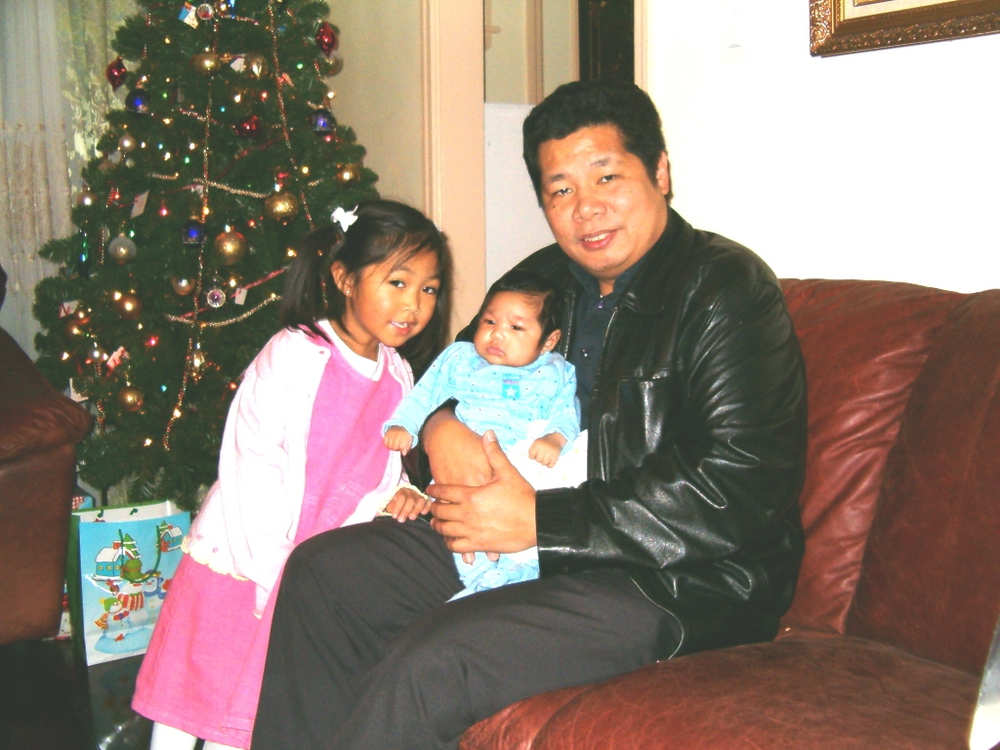
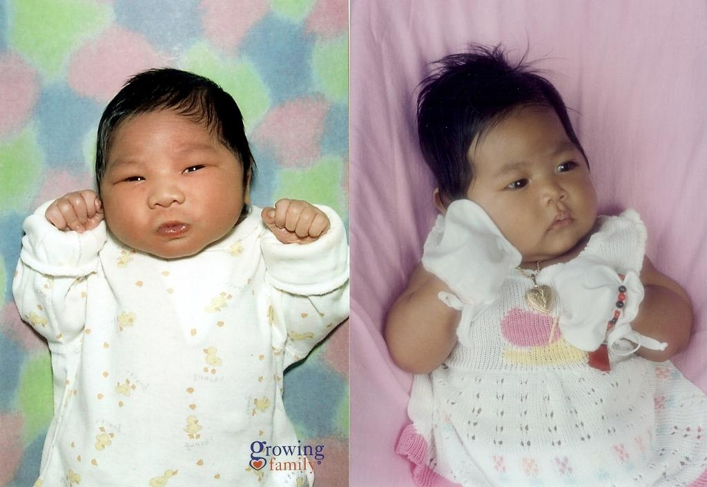

Hi Classmates,
Thank you: Ico, Dennis, Irene, Cherith, Jaime & Art sa warm welcome and to everyone who kept our batch solid through the years.
Apologies, I have been missing until now. Kudos to Jaime and others for creating and growing the egroup. Was excited to discover it on the net and reconnect.
My other half is Elnora emerg nurse, Rebecca 10, Nathaniel 5 (to send pictures to Jaime). Kuntento na dahil nakaabot pa sa biyahe ng tren.
Tama ang nakapag-sabi - seryoso daw ako noong nasa iskwela pa tayo - lito lang dahil maraming katanungan sa buhay. Taking it easy now due to pull of gravity, life is downhill from here.
Labas pasok:
Much liked teachers: Ms. Cervera (physics), Mrs. Castro(bio), Mr.Madriaga - ercouraged/inspired students. Principal student problem: Mrs. Reyes during flag ceremonies. Remember 'Ang mamatay ng dahil sa iyo'? Namingot tapos ikinula ang lahat sa araw.
Activities enjoyed: scouting, cat, basket board (with Ed Jacob/Aban, Roselito, others), softball (Larry C/A, Lolo, Emanuel A., others), lunch in the open areas of the school grounds, recess.
Hung out with: Dennis, Ed J., Lemuel, Budigs, Amador, Alex S., Gerry G, Ed R., Gary P., Larry C/A, Anthelmo, Ben, Bot, Bibing, Art, Charlie, Lolo,Emong,Richen,Felix, Arnel, etc
Happy to be back... If anyone gets the chance to visit Toronto, my number's listed: xxx-xxx-xxxx (contact qcshs75@yahoo.com). To keep tab of our future events.
Thanks...Noe
Noe, Rebecca, Elnora, Nathaniel


